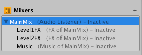
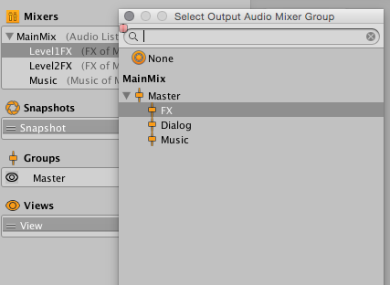
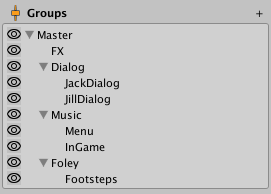
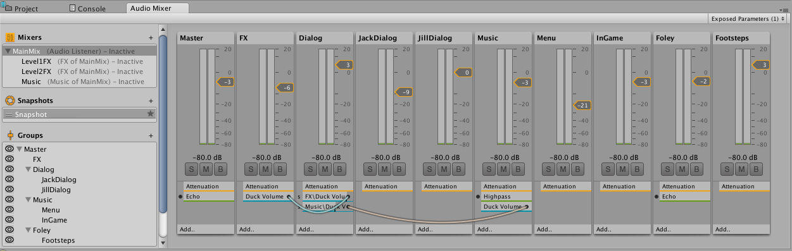
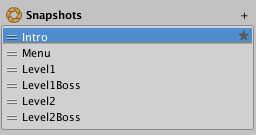
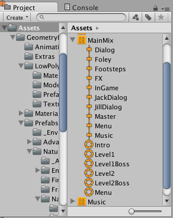

The Mixers Panel shows a complete list of all AudioMixers within the project. AudioMixers can be quickly switched between by selecting them within this panel. Routing one AudioMixer into the AudioGroup of another AudioMixer is also performed within this panel.
You can also create new AudioMixers in the project my clicking the ‘+’ icon in the top right of the panel.

Routing AudioMixers into other AudioMixers
Unity supports having multiple AudioMixers used within a sceneA Scene contains the environments and menus of your game. Think of each unique Scene file as a unique level. In each Scene, you place your environments, obstacles, and decorations, essentially designing and building your game in pieces. More info See in Glossary at once. By default, each AudioMixer outputs the audio signal directly to the AudioListener.
Developers can also choose to route the audio output of an AudioMixer into an AudioGroup of another AudioMixer. This allows for flexible and dynamic routing hierarchies at game runtime.
Routing an AudioMixer into another AudioGroup can be achieved two ways, firstly in the editor within the Mixers Panel, and the other dynamically at runtime using the AudioMixer API.
To change the output of an AudioMixer within the editor, simply click on an AudioMixer within the Mixers Panel and drag it over the top of another AudioMixer.
You will be presented with a dialog allowing you to select the AudioGroup of the target AudioMixer you would like to route into.
Once you select an output AudioGroup, the panel will show the parenting relationship of the AudioMixers. It will also show the target AudioGroup next to the AudioMixers name.

Hierarchy Panel
The hierarchy view is where you define the sound categories of an AudioMixer and the mixing structure. As described above, it allows you to define your own custom categories that AudioSources can connect to and play through.

Adding and Configuring AudioGroups within the Hierarchy
Adding and modifying the topology of an AudioMixer is done within the AudioGroup Hierarchy Panel.
Adding a new AudioGroup to the hierarchy can be done in 2 ways;
Right clicking on an existing AudioGroup (there must be at least one in an AudioMixer) and selecting ‘Add child group’ or ‘Add sibling group’.
Selecting an AudioGroup that you would like to add a child to and clicking the ‘+’ icon in the top right of the panel. This will add a new group to the AudioMixer under the selected one.
Changing the topology of an AudioMixer can be done by clicking an AudioGroup within the panel and dragging it over the top of another AudioGroup, this will parent the target AudioGroup above the one selected.
Deleting an AudioGroup (including its children) is achieved 2 ways;
By selecting the group you would like to delete and pressing the Delete key.
By right clicking the group you would like to delete and selecting the “Remove Group (and children)” option.
To duplicate an AudioGroup (and make it a sibling), right click the AudioGroup you wish to duplicate and select “Duplicate Group (and children)”. This will duplicate the group and child groups exactly, including effects contained within the groups.
To rename an AudioGroup, right click on the group and select “Rename”.
AudioGroup View

The AudioGroup View shows a flat arrangement of the AudioGroups in the AudioMixer. This arrangement is organised horizontally within the view. The groups shown within the AudioGroup View are dictated by the current View selection (covered later).
Each AudioGroup within the view is represented as a vertical “strip”. The layout and look and feel of the strip is common to Digital Audio Workstations and other audio editing packages. This layout is chosen to facilitate the transition of Audio Engineers from a music and video background, as well as serve as a parallel for audio hardware integration.
The strip is made up of title bar, followed by a vertical VU meter which represents the current audio levels through that AudioGroup. Beside the VU meter is a volume selector which allows you to input the AudioGroups attenuation along the same scale as the VU meter, which is represented in dB levels.
Below the VU meter are 3 buttons with the following functionality:
Solo - This toggle will enable you to switch between hearing the entire mix or only the AudioSources that are playing into children of the AudioGroup being Soloed.
Mute - This toggle allows you to switch between including the current AudioGroup in the audible mix or excluding it from being heard in the global mix.
Bypass - This toggle allows you to bypass or enable all the effects present within the AudioGroup.
The AudioGroup also contains a list of DSP Effect Units and the Attenuation Units within the AudioGroup. The attenuation can be applied anywhere within the Effect Unit chain within an AudioGroup and allows you to decide exactly where you would like the volume adjustment to be applied. This is useful for non-linear effects and Send and Receive Units (covered later).
Each Effect Unit slot has the following functionality:
It shows the name of the Effect Unit that is being applied
It shows a circle on the left hand side of the effect that can be toggled to enable or bypass that individual effect.
If you right click the effect and select “Allow Wet Mixing”, the coloured bar on the bottom of the effect slow becomes active, and denotes the amount of wet signal that is being passed through the effect.
Effects can be dragged up and down the AudioGroup to refine their order and also across AudioGroups to move the effect to another AudioGroup.
You can also add new Effect Units by right clicking on an existing effect to add before or after it, or by clicking the “Add..” button at the bottom of the strip.
Snapshot Panel
The Snapshot Panel allows you to create, switch between and tweak different Snapshots within the AudioMixer. There is always at least one snapshot active, and selection of a snapshot within the Snapshot Panel indicates that further edits of the AudioMixer are edits to that snapshot.
Snapshots defined in the Snapshot Panel also show up as sub-assets of the AudioMixer. This allows you to access the snapshots elsewhere in the editor and within scriptsA piece of code that allows you to create your own Components, trigger game events, modify Component properties over time and respond to user input in any way you like. More info See in Glossary.


You also define a ‘Start Snapshot’ (indicated by the star icon on the right hand side of the snapshot list). The Start Snapshot is the snapshot that the AudioMixer will be initialised to when loaded (for example, when the scene starts)
To create a new Snapshot, click the small ‘+’ icon at the top right of the panel. Enter in a name for the new snapshot.
To define a different Start Snapshot, right click on the desired Snapshot and choose “Set as Start Snapshot”.
Views Panel
Views allow you to create groups of visible AudioGroups in the AudioMixer. With views, you can create perspectives of interest into the AudioMixer, instead of always being presented with the full hierarchy at all times. Views are purely for workflow optimisation purposes are do not affect runtime setup or performance.
Like the Snapshot Panel, there is always one view selected and currently shown in the AudioGroup View. By default, all AudioGroups are visible in the default view. What is contained within a view is controlled by the Eye Icons in the Hierarchy Panel (see above).
To add a new view to the list of views, click the small ‘+’ icon at the top right of the Views Panel. Enter a name for the new view.
Change the current view by selecting between the list of views in the View Panel.
To remove a view, right click on the view and select ‘Delete’
To Duplicate a view (with all of the current view settings, right click on the view and select ‘Duplicate’
The ‘Eye’ Icon of an AudioGroup
Each AudioGroup within the hierarchy panel has a small eye icon to the left of the group. This icon serves 2 purposes;
Clicking on the eye icon toggles this AudioGroup’s visibility in the currently selected View.
Right clicking on the eye icon allows you to select from a range of colours to tag this AudioGroup with. Selecting a colour other than “No Colour” will give a small colour tag to the left of the eye icon as well as a colour tag under the AudioGroup’s name in the AudioGroup view. These colour indicators are a great way to visually group different concepts and collections of AudioGroups within the AudioMixer.
Did you find this page useful? Please give it a rating:
Is something described here not working as you expect it to? It might be a Known Issue. Please check with the Issue Tracker at issuetracker.unity3d.com.
Thanks for letting us know! This page has been marked for review based on your feedback.
If you have time, you can provide more information to help us fix the problem faster.
You've told us this page needs code samples. If you'd like to help us further, you could provide a code sample, or tell us about what kind of code sample you'd like to see:
You've told us there are code samples on this page which don't work. If you know how to fix it, or have something better we could use instead, please let us know:
You've told us there is information missing from this page. Please tell us more about what's missing:
You've told us there is incorrect information on this page. If you know what we should change to make it correct, please tell us:
You've told us this page has unclear or confusing information. Please tell us more about what you found unclear or confusing, or let us know how we could make it clearer:
You've told us there is a spelling or grammar error on this page. Please tell us what's wrong:
You've told us this page has a problem. Please tell us more about what's wrong:
Thanks for helping to make the Unity documentation better!